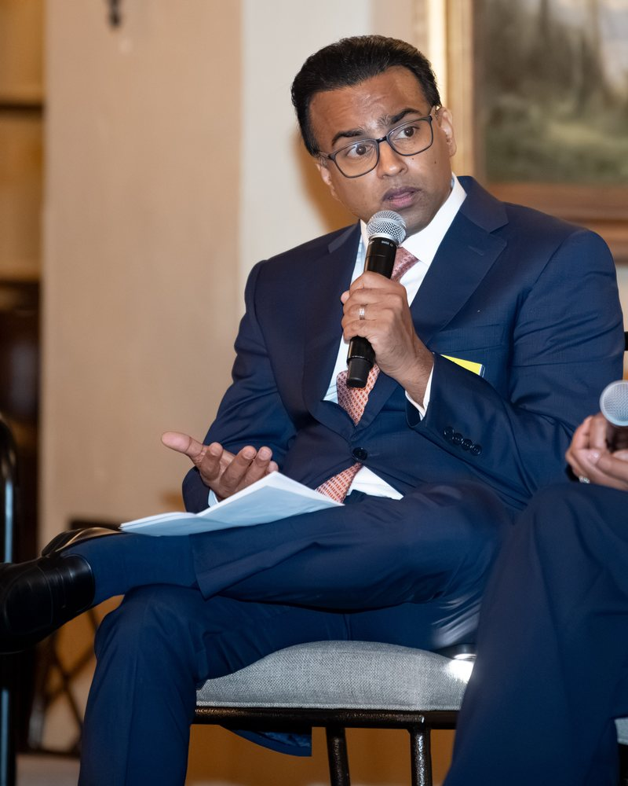
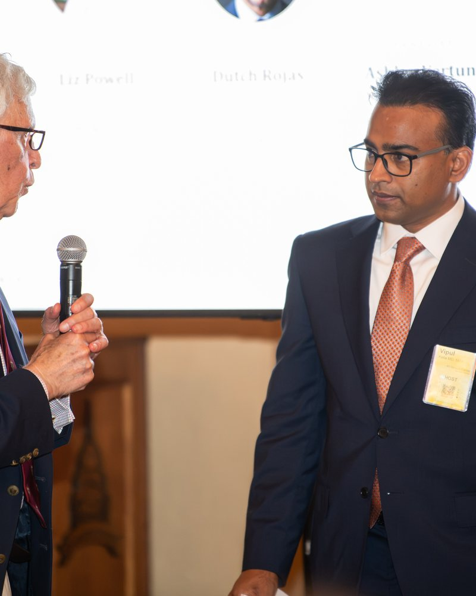
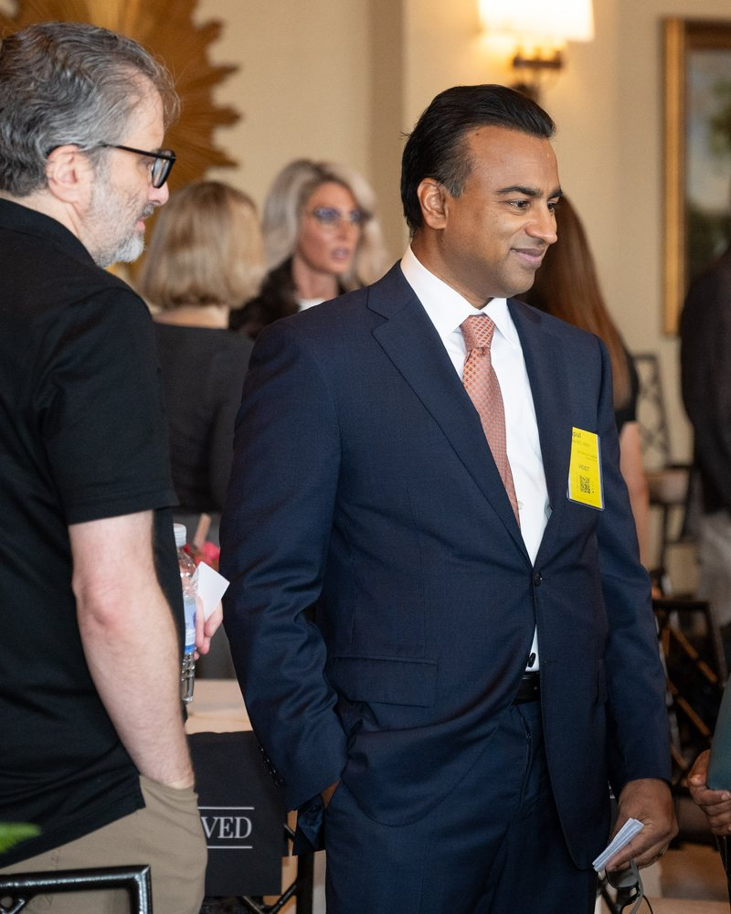

Vipul speaks from the intersection of clinical practice, capital, and operating — not as a generalist commentator, but as someone making these decisions directly, every week.



Vipul at Women's Health Nexus 2026
Each talk is built to be adapted to the room — a keynote, a fireside chat, or a panel seat. Topics below are starting points, not fixed scripts.
"Every health-tech team ships things that work in a demo and fail at 3 AM. Not because the technology is wrong. Because nobody on the team has stood at a bedside at 3 AM."
"Most capital in healthcare is being allocated against the wrong signal. Pitch decks have gotten very good at describing clinical problems. The companies solving them have not kept pace."
"Most physicians who want more get stuck on a false choice: stay clinical or leave medicine behind. The ones who actually get there don't choose — they find a way to do both."
For speaking inquiries — conferences, podcasts, panels, or internal talks — reach out directly.
Speaking Inquiry